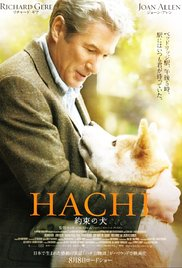

Shawshank Redumption
This film is directed by Frenk Darabont in USA in 1994. The successful banker Andy Dyufreyn is accused of murder of own wife and her lover. Having appeared in prison under the name Shawshank, it faces the cruelty and lawlessness reigning on both sides of a lattice. Everyone who gets to these walls, becomes their slave until the end of life. But Andy armed with lively wit and the kind soul refuses to be reconciled with a sentence of destiny and starts developing incredibly impudent plan of the release.
Hachiko
The movie is based on the real events which occurred in Japan in the twenties of the last century. The dog of breed of an Akita Inu daily met the owner, professor of the Tokyo university, at railway station. After death of the professor who died from a heart attack at university and didn't come back home Hatiko continued to come to station within 9 years. The dog who still during lifetime became a peculiar sight was an example of the true fidelity and devotion.
Undisputted 3
Director: Isaac Florentine Writer: David N. White Stars: Scott Adkins, Mykel Shannon Jenkins, Mark Ivanir. Realease date : 2013.Budget 300000$. Russian inmate Boyka, now severely hobbled by the knee injury suffered at the end of Undisputed 2. No longer the feared prison fighter he was, he has declined so far that he is now good only for cleaning toilets. But when a new prison fight tournament begins - an international affair, matching the best fighters from prisons around the globe, enticing them with the promise of freedom for the winner - Boyka must reclaim his dignity and fight for his position in the tournament
Salam New York
Director: Ruslan Akun Writers: Ruslan Akun, Guljan Toktogulova Stars: Marina Bain, Julia Daurova, Alex Galper Budget: $100 000 (estimated). It's a success story of a young Kyrgyz man, who went to conquer New York. He has to deal with unexpected adventures and challenges that he must eventually cope with
Home